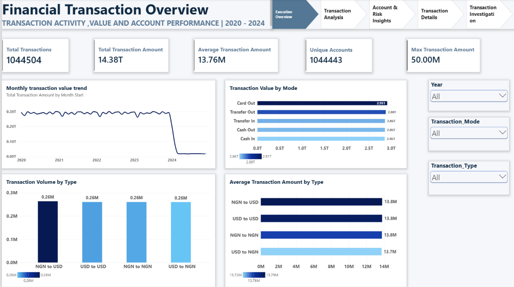

Financial Transaction Analytics
Power BI dashboard analyzing transaction methods, transaction types, financial trends and key KPIs.
POWER BI · EXCEL · POWER QUERY
View Project ↗
Hi, I'm Kusuma B G. I use data analysis, business intelligence and interactive dashboards to uncover trends, track KPIs and support data-driven decisions.
Tools I use and skills I am developing through practical projects.
Explore my analytics projects, dashboards and business reporting work. Select any project to view its GitHub repository.

Power BI dashboard analyzing transaction methods, transaction types, financial trends and key KPIs.
Interactive workforce dashboard covering demographics, employee performance, attrition, attendance and training.
Excel dashboard featuring KPI tracking, PivotTables, PivotCharts, slicers and business reporting.
Tableau project exploring restaurant revenue, orders, customers, menu performance and branch performance.
Excel dashboard examining complaint trends, resolution performance, SLA compliance and customer satisfaction.
Interested in my work or have a Data Analyst opportunity? Feel free to explore my repositories or connect with me.